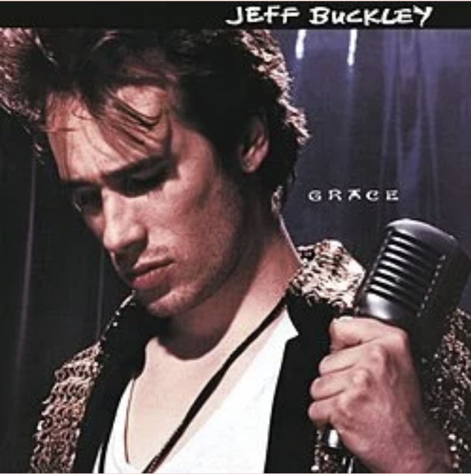

Music club!
How can a website bring people together through music? I designed and developed a music community website where members can discover recommendations, explore events, and share their favorite songs and albums.
Role
Designer & developer
Tools
HTML, CSS, JavaScript
Type
Web Design & Development
Timeline
Fall 2025
The website

The idea
Music discovery is often a shared experience, whether through friends, playlists, or listening parties. I wanted to create a central space where music enthusiasts could connect, discover new artists, and exchange recommendations through an intuitive, accessible website.
What I built
- Music Discovery: Created a curated collection of albums and songs with interactive filters to browse recommendations by category.
- Events:Developed a dedicated page for sharing upcoming listening events and community activities.
- Community Recommendations: Built a submission form where visitors can suggest their favorite songs and albums.
- Accessibility & Personalization: Implemented adjustable text sizes and font preferences to support different reading needs.
- Website Navigation: Designed a multi-page interface connecting music recommendations, events, and community interactions.